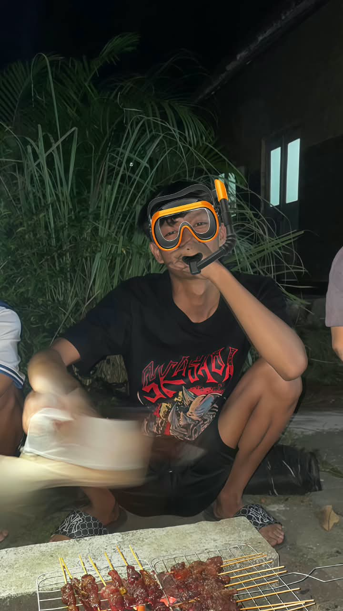

My Personal HTML Website
Halo, nama saya Ferdinandus Surya Aditya Pratama.
Saya adalah mahasiswa Universitas Sanata Dharma.
Saya senang belajar hal baru.
Ini adalah teks tebal.
Ini adalah teks miring.
Ini adlaah teks bergaris.
Ini adalah teks berwarna biru.

| Informasi | Keterangan |
|---|---|
| Nama | Ferdinandus Surya Aditya Pratama |
| Asal | Moyudan, Sleman, Yogyakarta |
| Kampus | Universitas Sanata Dharma |